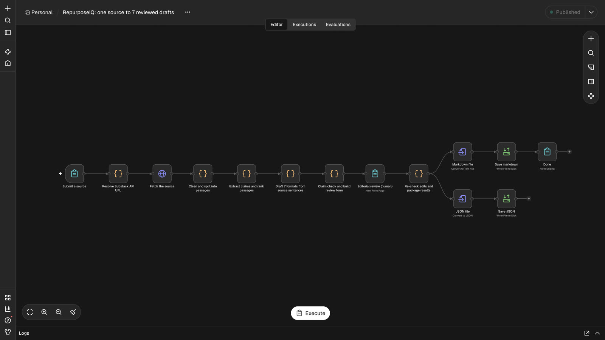
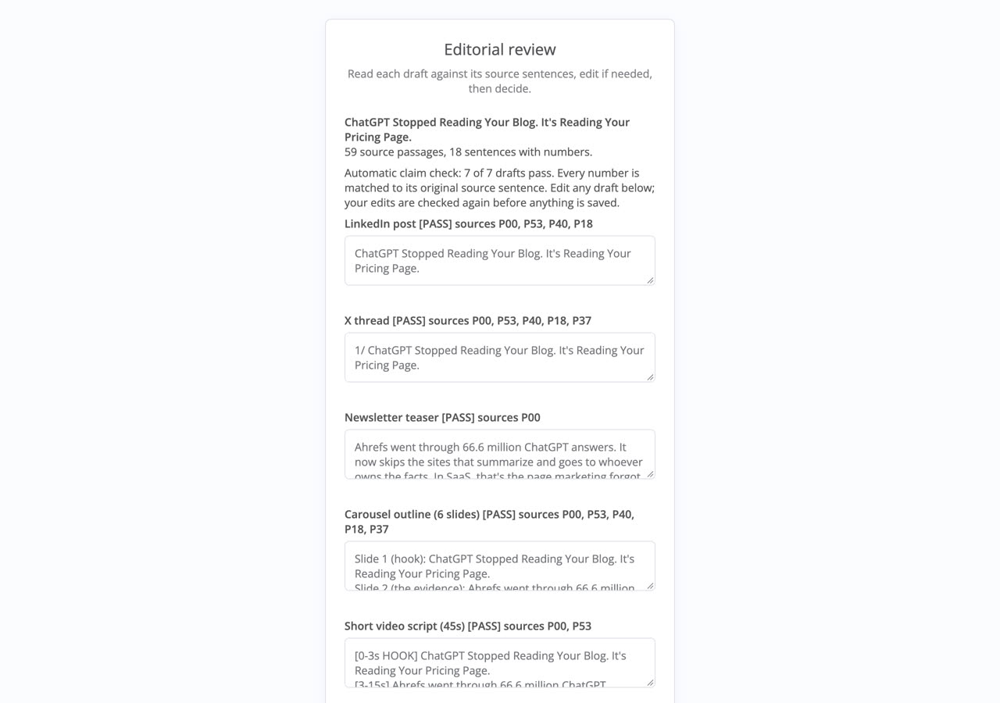

Content operations workflow · runs in n8n
One source. Seven drafts. A human signs off.
RepurposeIQ turns one published article into seven channel drafts built from the article's own sentences. Every number is matched to the sentence it came from, an editor reviews and edits, and the edits are checked again before anything is saved.
- 14 n8n nodes
- 7 draft formats
- 1 human review step
- 0 AI model calls
Try it
The same drafting and claim-check code the n8n workflow uses, running in your browser. Pick one of my Overlooked Memo issues, or paste your own text.
Or paste your own text
Source passages with numbers
Try changing a number in the draft. The claim check flags it the moment it no longer matches its source sentence.
See it run
A real run on my Mac, recorded on 23 Nov 2026. I submit an issue, review the seven drafts, add a line of voice, and change one stat on purpose (61% to 71%). The re-check blocks that draft and saves the rest.




Run outputs (unedited files written by n8n)
- Run 7: "ChatGPT Just Gave You 300 Characters". 6 approved, 1 blocked (the 71% edit).
- Run 5: "ChatGPT Stopped Reading Your Blog". 6 approved, 1 blocked (83% changed to 93%).
- Run 4: "LinkedIn Just Hired a Bouncer". 7 of 7 approved.
- Workflow JSON: import it into your own n8n (Workflows, Import from file).
How it works
- Submit a source. An n8n form takes a published Substack URL, an optional CTA link and the editor's name.
- Fetch and split. n8n calls the post's public API, strips the HTML, and splits the text into numbered passages. Reference lists and links are dropped.
- Extract and rank. Passages that carry numbers, named studies or a clear contrast rank higher. Each draft records which passages it used.
- Draft seven formats. LinkedIn post, X thread, newsletter teaser, 6-slide carousel outline, 45-second video script, sales follow-up email and three quote cards. Templates place the source sentences verbatim, so nothing is paraphrased into a new claim.
- Check every number. Each number in a draft must appear in the source, inside a sentence whose wording still matches the original. "41% failure rate" can't quietly become "41% efficiency gain".
- Human review. n8n pauses and opens a review page. The editor reads, edits and approves or sends everything back.
- Re-check and save. Edited drafts are checked again. Anything that fails is blocked; the rest is saved as Markdown and JSON with the editor's name, decision and notes.
What it doesn't do
- No AI model is called. Drafts are extractive templates, so they read like curated excerpts, not finished copy. That is deliberate for the first pass: an editor adds voice, the system guarantees the facts.
- The claim check covers numbers and their surrounding wording. It doesn't judge tone, relevance or claims without numbers. That is the editor's job.
- The workflow runs on a local n8n instance, so the form isn't publicly reachable. The video, screenshots, run files and workflow JSON are the proof.
- Input is limited to Substack posts in the n8n version. The browser version also accepts pasted text.
About
Built by Dheeraj Kumar Singh, a B2B SaaS content and GTM marketer. I built RepurposeIQ to show how I run content operations: one strong source, many channel-ready drafts, and a review step that keeps the facts intact. The sample sources are issues of my newsletter, The Overlooked Memo.
LinkedIn The Overlooked Memo Portfolio dheerajsingh2902@gmail.com Source on GitHub